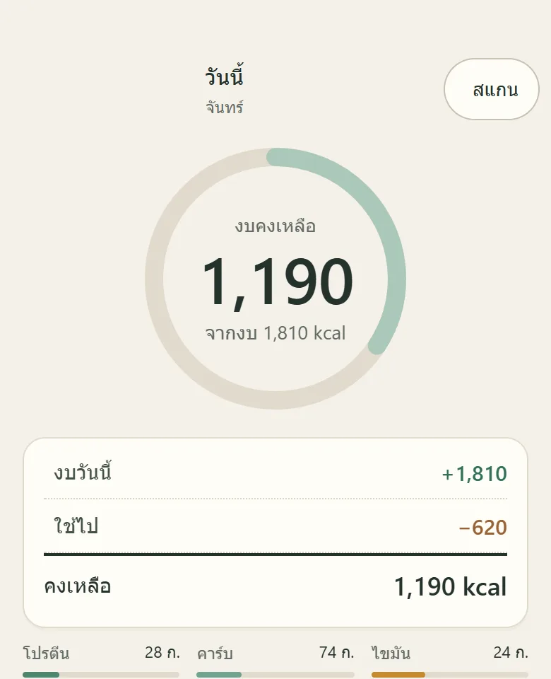

เปิดให้ร่วมทดสอบรอบแรก
กินดี
ไม่ต้องนับยาก
KinDee ตั้งงบแคลอรีรายวันจาก TDEE ของคุณ แล้วให้จดอาหารไทยเป็น จาน ทัพพี หรือไม้ ได้ในไม่กี่วินาที เห็นทันทีว่าวันนี้เหลืองบอีกเท่าไร
- 1,300+ เมนูไทย
- ใช้ได้แม้ไม่มีเน็ต
- ข้อมูลตาม PDPA
